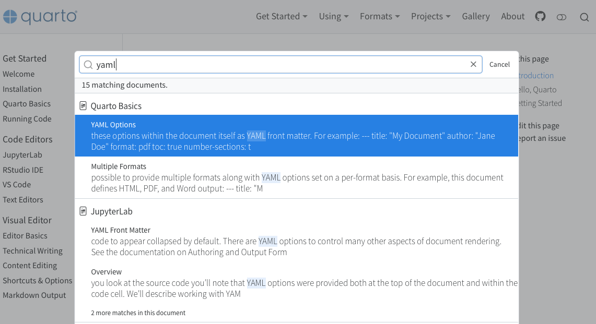
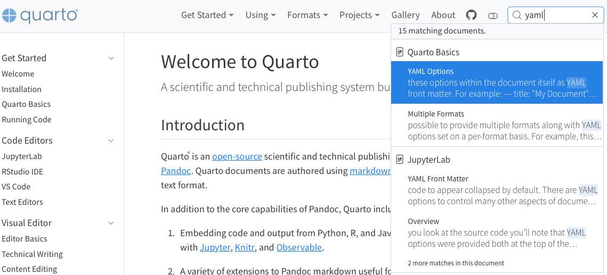

Website Search
Overview
Quarto includes support for full text search of websites and books. By default, Quarto will automatically index the contents of your site and make it searchable using a locally built index. You can also configure Quarto search to use a hosted Algolia index.
Search Appearance
Search is enabled by default for websites and books. If the site has a navbar the search UI will appear on the navbar, otherwise it will appear on the sidebar. You can control the location of search with the following options:
| Option | Description |
|---|---|
location |
navbar or sidebar (defaults to navbar if one is present on the page). |
type |
overlay or textbox (overlay provides a button that pops up a search UI, textbox does search inline) |
The overlay option displays the search UI as follows:

The textbox option displays search like this:

Customizing Results
You can use the following options to customize how search results are displayed:
| Option | Description |
|---|---|
limit |
The number of results to display in the search results. Defaults to 20. |
collapse-after |
The number of sections matching a document to show before hiding additional sections behind a ‘more matches’ link. Defaults to 2.
|
copy-button |
If true, the search textbox will include a small icon that when clicked will copy a url to the search results to the clipboard (this is useful if users would like to share a particular search with results). Defaults to false.
|


Using Algolia
In addition to the built in search capability, Quarto websites can also be configured to use an external Algolia search index. When rendering a website, Quarto will produce a JSON file (search.json in the site output directory) which can be used to update an Algolia index. For more on creating indexes with Algolia, see Send and Update Your Data using Algolia.
Basic Configuration
In order for Quarto to connect to your Algolia index, you need to provide basic connection information in your Quarto project file. You can find this connection information for your Algolia index in the Dashboard in the API Keys section. The following basic connection information is required:
| Option | Description |
|---|---|
index-name |
The name of the index to use when performing a search. |
application-id |
The unique ID used by Algolia to identify your application. |
search-only-api-key |
The Search-Only API key to use to connect to Algolia.
Important
Be sure to use the Search Only API key, which provides read only access to your index and is safe to include in project files. Never use your Admin API key in a Quarto document or project. |
For example:
site:
search:
algolia:
index-name: <my-index-name>
application-id: <my-application-id>
search-only-api-key: <my-search-only-api-key>Custom Index Schema
If you are simply using the search.json file generated by Quarto as your Algolia index, the above configuration information is all that is required to set up search using Algolia.
However, if you are generating an index in some other fashion, you may need to provide additional information to specify which fields Quarto should use when searching. You do this by including an index-fields key under aloglia which specifies the names of specific fields in your index.
| Option | Description |
|---|---|
href |
The field to use to read the URL to this index entry. The user will be navigated to this URL when they select the matching search result. Note that Quarto groups results by URL (not including the anchor when grouping). This field is required (either as an existing field in your index or with a mapped field name). |
title |
The field to use to read the title of the index entry. This field is required (either as an existing field in your index or with a mapped field name). |
text |
The field to use to read the text of the index entry. This field is required (either as an existing field in your index or with a mapped field name). |
section |
The field to use to read the section of the index entry. Quarto groups results by URL and uses the section information (if present) to show matching subsections of the same document. This field is optional. |
Any or all of the above may be specified in your Quarto project file. For example:
site:
search:
algolia:
index-name: <my-index-name>
application-id: <my-application-id>
search-only-api-key: <my-search-only-api-key>
index-fields:
href: url
section: sec
text: body
Algolia Insights
By default, Algolia provides a number of insights based upon the performance of your Algolia search. In addition, it may be helpful to understand more detailed tracking of the results that are viewed and clicked. You can enable click and conversion tracking using Algolia by setting the analytics-events to true:
site:
search:
algolia:
index-name: <my-index-name>
application-id: <my-application-id>
search-only-api-key: <my-search-only-api-key>
analytics-events: trueYou can confirm that events are being properly sent to Algolia using the Event Debugger. Note that the click and conversion events use cookies to maintain an anonymous user identifier—if cookie consent is enabled, search events will only be enabled if cookie consent has been granted.
Advanced Configuration
In addition to the above configuration, you may also pass Algolia specific parameters when executing a search. For example, you may want to limit results to a particular facet or set of tags. To specify parameters, add the params key to your algolia yaml and provide params. For information about about available parameters, see Algolia’s Search API Parameters.
For example:
site:
search:
algolia:
index-name: <my-index-name>
application-id: <my-application-id>
search-only-api-key: <my-search-only-api-key>
index-fields:
href: url
section: sec
text: body
params:
tagFilters: ['tag1','tag2']Disabling Search
You can disable search for an indvidual document by adding search: false to the document metadata. For example:
---
title: "My Document"
search: false
---If you’d like to disable search support for an entire website, you can do so by including the following in your _quarto.yml file:
site:
search: false